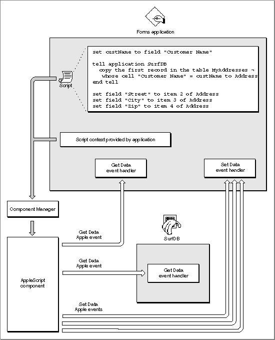

Scripting Components and Applications That Execute Scripts
To store and execute scripts as a client application, your application must first establish a connection with a scripting component registered with the Component Manager on the same computer. Each scripting component can manipulate and execute scripts written in the corresponding scripting language when your application calls the standard scripting component routines.Your application can use scripting component routines to
Your application can perform these tasks as a client application regardless of whether it is scriptable or recordable. If your application is scriptable, however, it can execute scripts that control its own behavior, thus acting as both the client application and the server application for the corresponding Apple events. For example, your application can allow users to associate a script with a custom menu command that performs a series of routine actions on a selected object, sets preferences, or automates other actions within your application.
- obtain a handle to a script in a form that can be saved, and load the script again when necessary
- allow users to modify scripts that have been previously saved
- compile and execute scripts
- redirect Apple events to script contexts
- supply application-defined functions for use by scripting components
- control the recording process directly, turning recording off and on and saving the recorded script for use by your application
You can also use scripting component routines to execute scripts that perform tasks for your application with the aid of other applications. For example, a user of a word-processing application might be able to attach a script to a specific word so that the application executes the script whenever that word is double-clicked. Such a script could trigger Apple events that cause other applications to look up and display related information, run a QuickTime movie, perform a calculation, play a voice annotation, and so on.
Your application can associate a script with either Apple event objects or application-defined objects. Almost any user action can be used to trigger such a script: choosing a menu command, clicking a button, tabbing from one table cell to another, and so on. The script can be executed directly by the application when it detects a triggering action; or, if the script is associated with an Apple event object in the form of a script context, it can be executed automatically when a specified Apple event performs an action on that object.
The rest of this section describes one way that an application could execute such a script. Suppose a forms application allows users to create custom forms that can include scripts associated with specific fields on the form. These scripts are executed when the user presses Enter or Tab in the appropriate field. For the purposes of this example, it doesn't matter whether a field with which a script is associated is an Apple event object (which can be described in an object specifier record) or some other application-defined object (which can't be described in an object specifier record).
A company could use the forms application to create a custom order form for taking telephone orders. If the customer has ordered from the company before, the user can quickly retrieve the customer's address from the company database by typing the customer's name in a field and pressing the Tab key. In response, the application executes the script associated with the field. The script might look like this in AppleScript:
set custName to field "Customer Name" tell application SurfDB copy the first record in the table MyAddresses � whose cell "Customer Name" = custName to Address end tell set field "Street" to item 2 of Address set field "City" to item 3 of Address set field "Zip" to item 4 of AddressTo execute such a script (or to manipulate it any other way, such as when the form is first created), the forms application must previously have established a connection with the appropriate scripting component--in this case, the AppleScript component. When the user enters a customer name and presses Tab, the forms application calls scripting component routines to execute the script. As shown in Figure 7-4, the AppleScript component first sends the forms application a Get Data event that requests the contents of the "Customer Name" field and sets the variablecustNameto that value. It then sends SurfDB a Get Data event that requests the appropriate address information and copies it to the variableAddress. (The replies to the Get Data events are not shown in Figure 7-4.) Finally, the AppleScript component sends the forms application a Set Data event that copies the address information from the variableAddressto the appropriate fields.The AppleScript component needs to maintain the binding of the variables
custNameandAddressthroughout execution of the script. Scripting components bind variables with the aid of a script context, which is a script that maintains context information for the execution of other scripts. An application specifies a script context when it executes a script. The forms application in Figure 7-4 provides a context for the scripting component to use whenever it executes a script associated with a button.Figure 7-4 How an application uses the AppleScript component to execute a script

In the example shown in Figure 7-4, the application executes the script directly when the cursor is in the appropriate field and the user presses Tab or Enter. Your application can also associate such a script with an object in the form of a script context, so that the script context is executed whenever a specified Apple event acts on the field. The section "Using a Script Context to Handle an Apple Event," which begins on page 7-21, describes this approach in more detail.
See "Manipulating and Executing Scripts," which begins on page 7-17, for an overview of methods your application can use to save and load script data, compile source data, and perform other useful tasks with scripting component routines. The chapter "Scripting Components" in this book provides full implementation details, including sample code and human interface guidelines for associating scripts with objects.